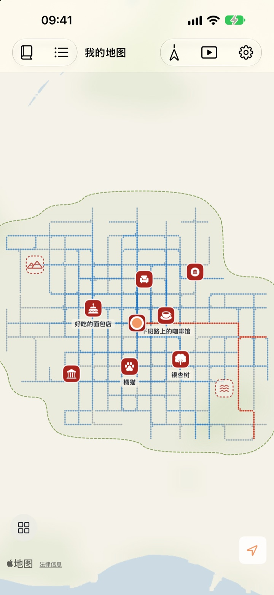
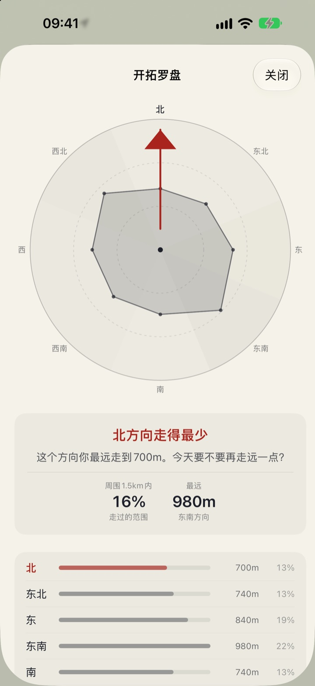
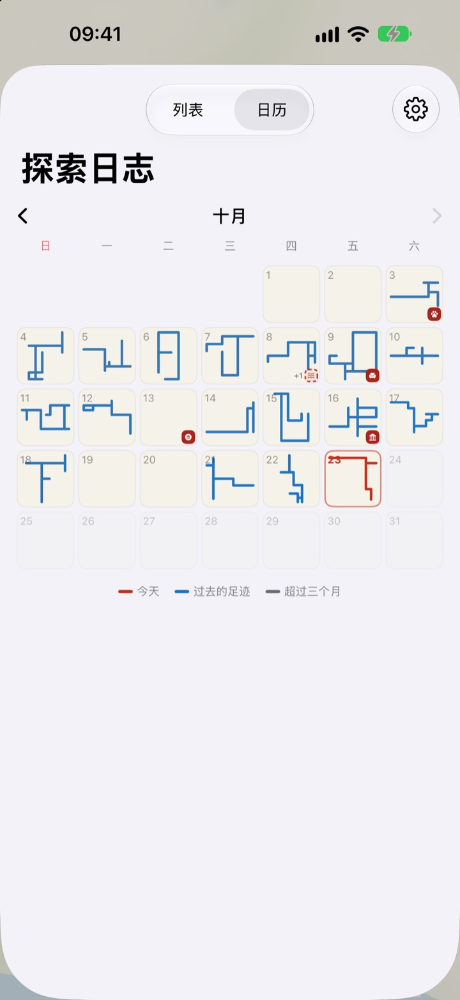

只有走过的路
才会被画上
一开始只是一张白纸。只有你亲脚走过的地方会一点一点填满，同一条路走一百遍也不会变大。想让地图变大，就去走一条新路。
所有功能免费，没有广告。

走走看
用手指或鼠标在纸上拖动，就算走路。蓝色的点是以前走过的路。比较一下沿着旧路走和往新方向走时，“今天画的路”会怎样变化。
每天都走同样的路？
计步器只数步数，从不关心你走去了哪里。家和车站来回一趟，圆环就满了，隔壁那条小巷却好几年都没走进去过。Buktu Buktu 只计算第一次走的路，让你今天有理由多绕一个街区。
给去过和想去的地方盖章
可以在你站着的地方盖章，也可以长按地图上任意位置。共有 212 种图章，按类别挑选。
盖在从没走过之处的图章会保留为“想去的地方”，真的走到那里后就变成“去过的地方”。拍下店铺招牌，背景会被自动抠掉，变成立在那个地点的贴纸。
下一次散步，去走得最少的方向
开拓罗盘把你周围分成八个方位，指出你走得最少的那个方向。
今日足迹按顺序列出你今天停留过的地方，并标出彼此之间走了多远。

每一天都留下一个形状
日历上不写数字，而是画出当天走过的形状。每天用文字和照片写日记，还能看到每次散步里有多少是新路。
选定一段时间，就能以视频观看地图被画出来的过程，并导出。

三步开始
- 1
打开 App
一张白纸展开。
- 2
允许定位
选择“始终允许”并打开“运动与健身”，不打开 App 也能记录散步。
- 3
出门走走
越陌生的街道，地图长得越多。
如何看地图
- 红点
- 今天走过的地方
- 靛蓝色点
- 过去的足迹，越常经过颜色越深
- 灰点
- 超过三个月没再去的地方，会褪色但不会消失
- 虚线图章
- 想去的地方，走到那里就变成去过的地方
- 我画出的路
- 所有第一次走过的路的总长度
- 今天画的路
- 今天走的路中有多少是新路
- 汇总查看
- 在设置中打开开拓罗盘、今日足迹和绘制影片
地图可以在水墨地图和绘本地图之间选择。
所有功能免费
免费
- 只在走过的地方填满的地图，并记录新路
- 212 种图章和店铺招牌贴纸
- 开拓罗盘和今日足迹
- 日历，以及图文日记
- 导出地图绘制过程的视频
- 主屏幕和锁定屏幕小组件
- 通过 iCloud 在设备间同步
支持开发者
- 如果愿意，可以在设置里给一点小费
- 小费不会解锁任何功能，App 都是一样的
没有广告，没有订阅。
常见问题
走了路，地图上却什么都没有。
请前往“设置”>“Buktu Buktu”>“位置”，选择“始终”，并打开“运动与健身”。这样即使 App 关闭也能记录。如果你在 App 设置里选了省电的记录方式，请先打开 App 再出发。精度较低的位置会被保存，但不会画在地图上。
乘车或地铁会被记录吗？
不会。App 根据运动数据和速度只画出步行和跑步，看起来像乘车的路段会被去掉。偶尔也会判断失误。
我每天走同一条路线，地图却没有变大。
这就是规则。离已走过的地方 30 m 以内都算同一条路，所以只有第一次走的路才会加进“我画出的路”。马路对面的人行道也算同一条路。开拓罗盘会告诉你哪里走得最少。
我的位置会被发送到别处吗？
不会发送给开发者。你的足迹、图章、日记和照片保存在你的设备和你个人的 iCloud 中，开发者看不到。匿名使用统计绝不包含坐标、日记文字、地点名称或照片。把坐标转换为地点名称时会使用 Apple 地图服务。详情请看下方的隐私政策。
换新设备后记录会跟过来吗？
会。在新设备上登录同一个 Apple 账户并保持 iCloud 开启，足迹、图章、日记和照片都会跟过来。
怎样删除图章或照片？
在“我盖过章的地方”列表中删除图章；按住日记里的照片即可删除。一次性清除所有路线和日记的功能已列入开发计划。
怎样添加小组件？
在主屏幕上按住，轻点“编辑”>“添加小组件”，然后选择 Buktu Buktu。锁定屏幕则按住后轻点“自定”。主屏幕小组件显示今天路线的形状和长度，锁定屏幕显示今天的距离。
需要什么设备？
运行 iOS 17.0 或更高版本的 iPhone。
怎样联系你们？
可以在 App 的设置中发送反馈，或发邮件到下方地址。我们会尽快回复。
有问题或建议？请写信至 leeo@kakao.com。